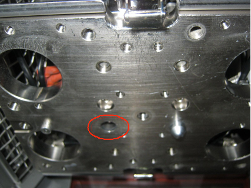

Service History
Subject: NS-8080 Index Arm1 guide pin dropped off
Handler Model: NS-8080 (S/N:181750, NS8080-06) UTAC
Controller: RC520 (S/N: 03-05035)
Date: 24 Feb 2012
Symptom
See attached pic of missing Index Arm1 guide pin for NS8080-06.
Possible to get replacement ASAP? Handler still under warranty according to Handler Engineering group.
Handler currently running with Arm1 disabled due to this problem.

Action
Cause